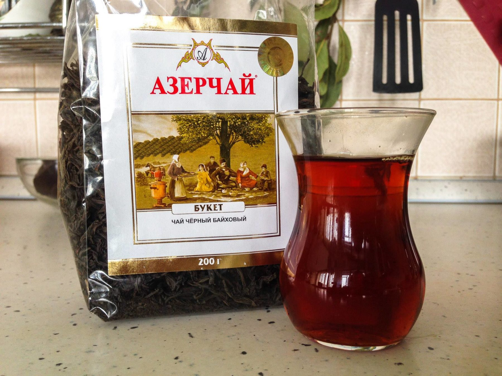

Для тех, кто любит чай, не секрет, что в Кемерове нормального чая днём с огнём не найти.
Про пакетированные чаи говорить не будем вовсе — ведь каждый может внутри своей квартиры заниматься какими угодно извращениями, — поговорим об обычном листовом чае.
Майский, Принцессы Гиты и прочий Брук Бонд с Липтоном человек, который любит чай, пить не будет.
Не являются панацеей и специализированные чайные магазины. Дело в том, что чай — продукт очень нежный, в смысле условий и сроков хранения, а в специализированных магазинах, которые продают чай в небольшом городе, просто нет спроса, чтобы оборачивать продукт, поддерживая его свежесть.
Об ароматизированных чаях разговор особый, с тем же успехом можно в заварник наливать, скажем, Колу или Спрайт.
Исключением на рынке долгое время был только чай Dilmah. Около месяца назад в большинстве розничных сетей города появилась отличная альтернатива Дилме — Азерчай. Несмотря на то, что на упаковке кокетливо написано «Произведено в России» — пусть эта информация вас не пугает. В России чай только фасуют. Чай выращивают и производят в Азербайджане.
